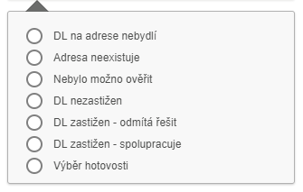

Zápis z OSN
Na základě osobní návštěvy tato funkce umožní uživateli vložit do systému průběh a hlavně výsledek osobní návštěvy. Průběh má přesně nadefinovaný postup a na něj navazují jednotlivé procesy.
Při obdržení spisu se vždy předpokládá provedení první osobní návštěvy na adresu označenou jako Hlavní. Jakmile zde uživatel neuspěje, může adresu změnit na jinou v systému, případně zjistit či dohledat jinou.
Postup zadávání se neliší pro první, tak i pro opakovanou osobní návštěvu u klienta. Vyplnění informací je volitelné, kde je povinné, tam je tato informace zvýrazněna u pole zadávání hvězdičkou nebo slovně. V případě nevyplnění je na tuto skutečnost uživatel upozorněn. Zápis se skládá z jednotlivých akcí (objektů), které navazují na sebe podle následujícího vývojového diagramu.

Při schůzce může dojít k sedmi možným variantám výsledku.

Pro každou vybranou variantu jsou předdefinované kroky, které umožní v rychlém sledu zadat všechny potřebné informace.
Akční tlačítko je nepřístupné, pokud není vybrán žádný spis či je vybráno více spisů než jeden.